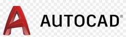
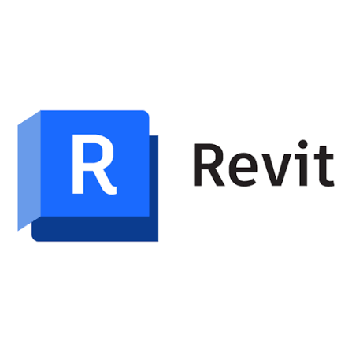
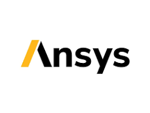
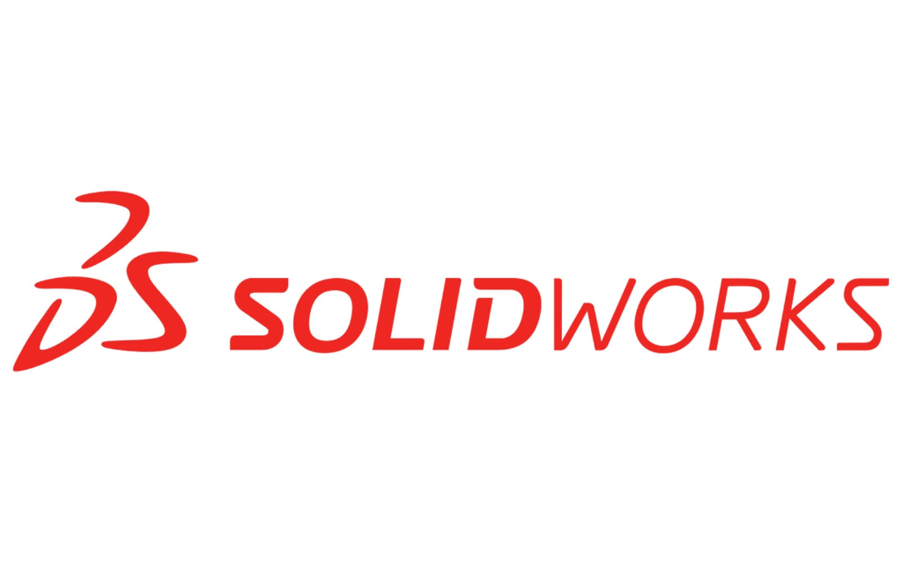
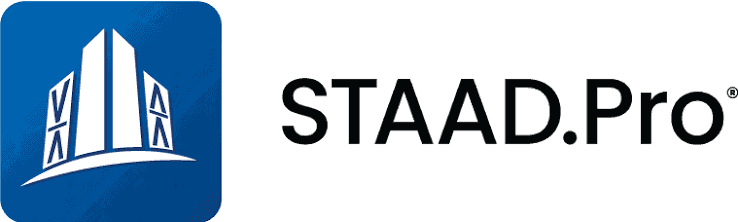
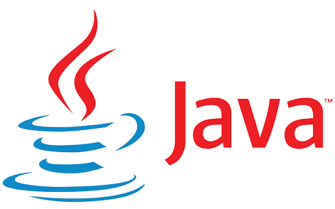
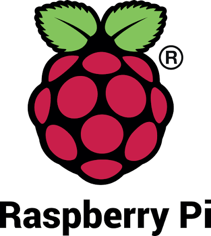

India's most advanced multidisciplinary engineering training ecosystem. Master Revit, ANSYS, VLSI, EV Powertrain, Full-Stack DevOps, Aspen Plus and more — through real-world projects, structured mentorship, and institute-level lab programs.







Every program follows our proven 5-phase methodology — from foundational theory to industry-ready implementation in real projects.
Master fundamentals — engineering theory, software basics, industry standards and best practices.
Apply tools on real-world projects — architectural layouts, structural models, mechanical assemblies.
Run simulations, structural analysis, FEA workflows and validate designs against industry norms.
Execute capstone projects — complete deliverables, documentation, and portfolio-grade outputs.
Industry presentation, placement support, internship readiness, and professional certification.
Whether you're building structures that shape skylines or designing systems that power industries —
Master structural design, BIM modeling, and digital construction workflows used by India's top infrastructure firms.
Dive deep into FEA, simulation, product design and manufacturing engineering tools used by aerospace and automotive industries.
Master full-stack DevOps development, cloud architecture, and modern artificial intelligence/machine learning pipelines.
Design electric vehicle powertrains, model battery management systems, and analyze smart grid renewable systems.
Master VLSI digital system design, FPGA architectures, and microelectronic circuit modeling.
Develop embedded firmware, program IoT networks, and design real-time communication systems.
Run process simulations with Aspen HYSYS, design piping layouts, and engineer industrial water treatment systems.
Every tool in our curriculum is used by top engineering firms today. Not theoretical exercises — real workflows, real projects.
TechM4Engineering's vision is to build dedicated, industry-standard engineering labs inside colleges and universities across India — bringing professional-grade tools directly to students on campus.
Dedicated Revit, STAAD Pro, and ANSYS workstation labs set up inside engineering colleges — giving students daily access to industry tools without leaving campus.
Programs designed to be recognized as academic credit by universities — bridging the gap between industry training and official university curriculum requirements.
Experienced industry practitioners embedded as guest faculty — bringing real project experience and current industry workflows directly into the classroom.
Project studios where students work on actual engineering assignments sourced from industry partners — building real portfolios with real deliverables.
Dedicated innovation spaces for student-led research, prototype development, and applied engineering — supported by TechM4India's technical ecosystem.
Direct pipelines to engineering consultancies, construction firms, manufacturing industries, and infrastructure companies for internship and full-time placement.
Structured as semester-length programs aligned with university academic calendars — enabling seamless integration with B.Tech and M.Tech curriculum frameworks.
Semester-1 introduction to industry software — CAD basics, BIM fundamentals, drawing standards, and engineering documentation practices.
Advanced structural analysis workflows — from modeling to analysis to design verification using STAAD Pro, ETABS, and ANSYS.
Industry-level advanced programs — HyperMesh meshing workflows, advanced BIM coordination, clash detection, and construction documentation.
Tailored programs designed for university partnerships — integrated into curriculum with faculty co-training, lab setup, and student certification pathways.
Every program outcome is designed around what real engineering employers and project teams expect from day-one professionals.
Complete project deliverables — structural drawings, analysis reports, BIM models, and simulation results that showcase real capability.
Hands-on mastery across 5+ industry tools. Not basic introductions — deep, workflow-level proficiency that employers recognize.
TechM4India certification recognized by industry partners across infrastructure, construction, and manufacturing sectors in India.
Resume building, interview preparation, and direct referrals to engineering consultancies, EPC companies, and manufacturing firms.
Join TechM4Engineering — where Civil and Mechanical engineers learn with industry tools, real projects, and structured pathways to professional success.